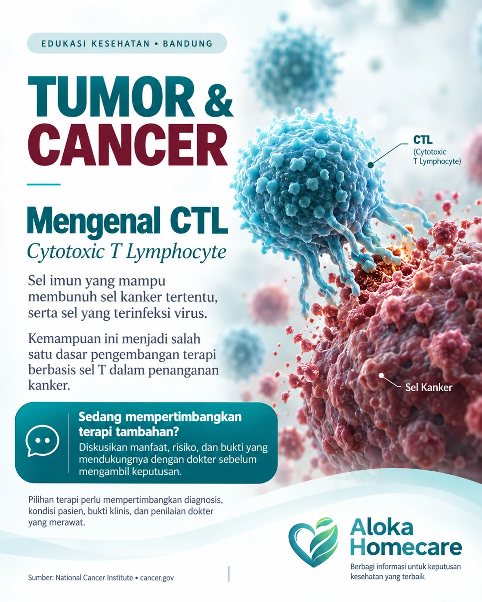

Berawal dari sel-T pasien
Brosur SCCR menjelaskan pendekatan autologus: sel-T diambil dari tubuh pasien sendiri untuk diproses lebih lanjut.
ALOKA HOMECARE • Bandung
Memahami peran sel imun, agar langkah selanjutnya dipertimbangkan dengan lebih baik.
CTL atau Cytotoxic T Lymphocyte adalah salah satu jenis sel imun yang mampu membunuh sel kanker tertentu, serta sel yang terinfeksi virus. [1]
Informasi awal melalui WhatsApp. Keputusan terapi tetap bersama dokter yang merawat.

Untuk pasien dan keluarga yang ingin memahami CTL sebelum mengambil keputusan.
01 / DASAR ILMIAH
Dari sel-T pasien hingga respons terhadap sel target: kenali gambaran proses CTL yang dijelaskan dalam brosur SCCR. Memahami prosesnya membantu Anda menyiapkan pertanyaan untuk dokter.
Brosur SCCR menjelaskan pendekatan autologus: sel-T diambil dari tubuh pasien sendiri untuk diproses lebih lanjut.
Sel-T kemudian diaktivasi agar dapat mengenali target pada sel kanker tertentu. Rincian proses dan kesesuaian produk perlu dijelaskan oleh tim medis.
Brosur menggambarkan pelepasan perforin dan granzim yang dapat memicu kematian sel target melalui apoptosis.
Alur ini merangkum penjelasan biologis dalam brosur CTL — Cytotoxic T-Lymphocyte, halaman 2. Mekanisme tersebut bukan jaminan keberhasilan terapi. Penggunaan sel pasien sendiri juga tidak berarti bebas risiko; manfaat dan risiko harus dinilai untuk produk serta kondisi yang spesifik.
02 / SEBELUM MEMUTUSKAN
Pilihan terapi perlu mempertimbangkan diagnosis, kondisi pasien, bukti klinis, dan penilaian dokter yang merawat.
Apa diagnosis yang sudah ditegakkan, dan apa tujuan terapi yang sedang dipertimbangkan?
Diskusikan bukti untuk jenis kanker dan produk yang dimaksud, serta kesesuaiannya dengan kondisi pasien. [2]
Bagaimana terapi ini terkait dengan pengobatan yang sedang dijalani? Jangan mengubah pengobatan tanpa berdiskusi dengan dokter.
03 / RUJUKAN
Penjelasan tentang CTL dan kemampuan biologisnya.
[2] NATIONAL CANCER INSTITUTEPendekatan terapi sel T dan penggunaannya pada indikasi tertentu.
[3] SCCR INDONESIASCCR mencantumkan riset kanker serta pengolahan sel sebagai bidang penelitiannya.
Rujukan tambahan: brosur SCCR Indonesia, CTL — Cytotoxic T-Lymphocyte, 2 halaman, ditelaah 23 September 2026. Alur di atas diadaptasi dari halaman 2; brosur tidak mencantumkan data uji klinis yang cukup untuk menyimpulkan keberhasilan suatu produk pada semua jenis kanker. NCI digunakan untuk konteks ilmiah terapi sel T; CTL tidak otomatis sama dengan CAR-T atau TIL.
KONSULTASI CTL • Bandung
Memahami sel imun adalah langkah awal. Bersama Aloka, mulai percakapan tentang proses CTL, informasi layanan, dan pertanyaan yang perlu dibawa kepada dokter.
Aloka Homecare · +62 898-0111-168
Kelayakan, ketersediaan, dan lokasi pelayanan dikonfirmasi melalui evaluasi medis. Tidak menjanjikan kesembuhan atau tindakan CTL di rumah. Tetap ikuti arahan dokter yang merawat.
KENALI PERAN SEL IMUN
Cytotoxic
T-Lymphocyte
Mengenali target.
Memicu respons sel imun.